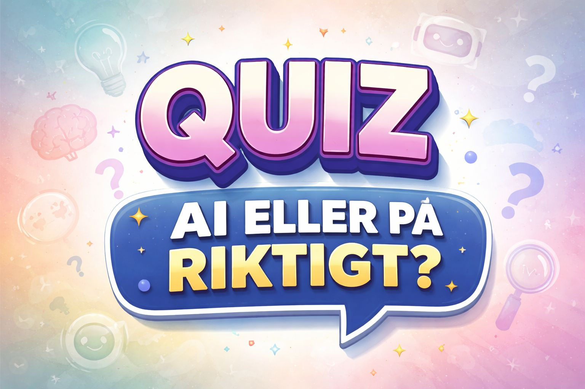

🕵️ Sanningsdetektiven
Hur bra är du på att upptäcka bluffar, falska nyheter och sådant som inte verkar stämma på nätet?
Välkommen till Sanningsdetektiven!
Du får 10 frågor med fyra svarsalternativ. Välj det svar du tycker är bäst.
Efter varje svar får du veta om det var rätt och läsa en förklaring. Du får en poäng för varje rätt svar.
Lycka till – och tänk som en detektiv!
🕵️ Sanningsdetektiven
🎉 Du har klarat quizet!

Vill du fortsätta träna?
Här kan du testa fler saker och fundera vidare över vad som är sant på nätet.
Vad ser du?
Titta noga på bilden. Kan du upptäcka detaljer som hjälper dig att avgöra vad du ser?
Bild 1
Kan du skilja AI från verkligheten?

SVT har ett quiz där du får testa om du kan skilja AI-genererade videor från verkliga videor.
Jämför flera nyhetskällor
Om du undrar om en nyhet stämmer kan du undersöka vad flera etablerade nyhetskällor skriver.
Tänk på att även etablerade källor kan behöva kompletteras med mer information.